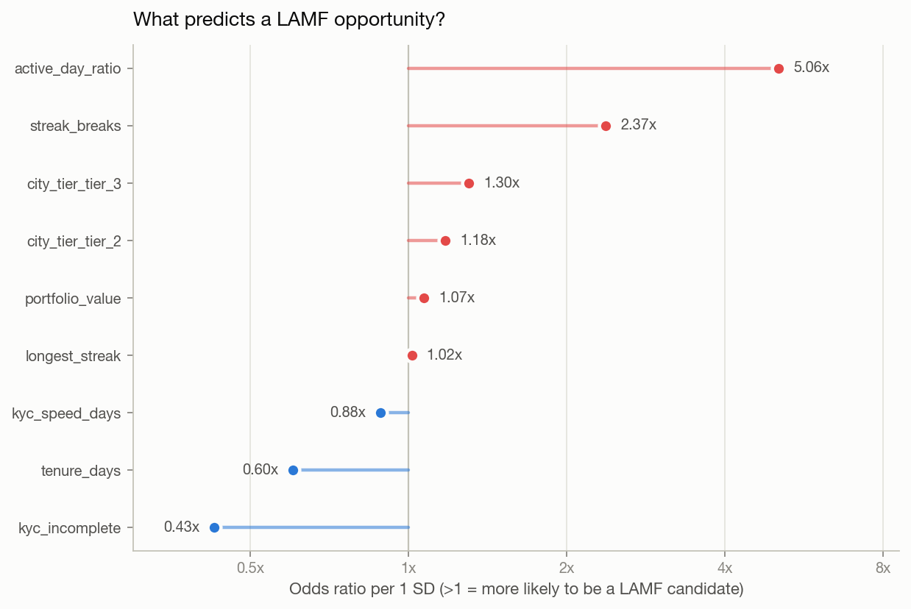
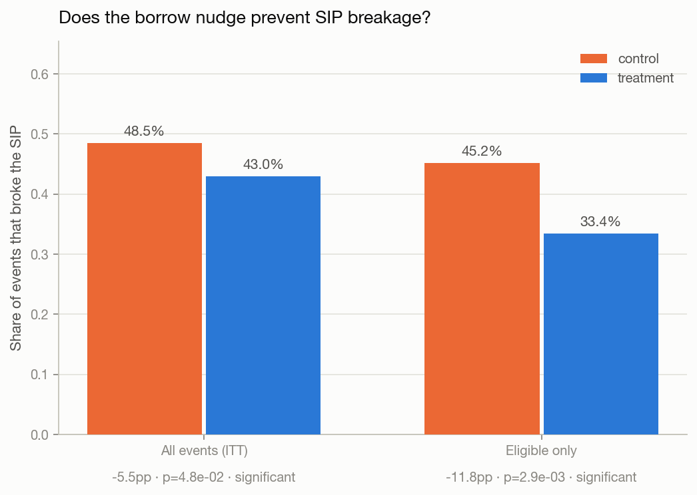

Borrow instead of break: the live findings
This page is generated from the actual pipeline output in Navneet-Scaler/bridge, hosted on GitHub Pages and rebuilt as the analysis changes. Every number below traces to a committed test or a query against the live database.


The question
If BlinkMoney pushes LAMF harder, who should be targeted first, and what does it do to revenue?
Headline numbers
1. This cohort cannot support LAMF at real economics
A Rs 21/day micro-SIP book, one year in, has a median portfolio of Rs 862 and a maximum of Rs 11,841. The industry's typical minimum ticket is Rs 25,000. Three independent parts of the pipeline converge on this same wall: the simulation could not seed an eligible population at that threshold, the unit economics calculator derives a breakeven ticket of Rs 22,857 from cost structure alone (within 9% of the industry figure, by a completely different route), and a live query against the collateral table shows coverage falling to exactly zero at that price, not tapering toward it. Every revenue figure this project produces is an upper bound on a book that could not be written today.
2. Consistency predicts candidacy five times better than portfolio size
The propensity model (logistic regression, held-out ROC-AUC 0.870)
found that active_day_ratio, sourced directly from
Cadence's streak output, carries an odds ratio of 5.06× per
standard deviation, against 1.07× for raw portfolio value.
Investing reliably every day is a far stronger signal of LAMF
candidacy than how much money is sitting in the account.

| Feature | Odds ratio | Direction |
|---|---|---|
| active_day_ratio | 5.06× | increases |
| streak_breaks | 2.37× | increases |
| city_tier_tier_3 | 1.30× | increases |
| portfolio_value | 1.07× | increases |
| tenure_days | 0.60× | decreases |
| kyc_incomplete | 0.43× | decreases |
3. The borrow nudge works, independent of the collateral problem
Among users who actually cleared the eligibility screen, showing "borrow instead of withdraw" cut SIP breakage from 45.2% to 33.4%, a change of −11.8 percentage points (p = 0.0029). The two arms were balanced on every pre-treatment covariate checked before the outcome was examined (p = 0.88 on eligibility, p = 0.42 on the size of the cash need), which is what licenses reading this as causal rather than as selection.

How the pipeline gets here
Full architecture, the entity relationship diagram, and setup instructions are in the repository README. Bridge extends Cadence's shared Postgres database rather than standing up its own; it cannot run standalone, and the README says so directly rather than leaving that discovery to a reviewer.